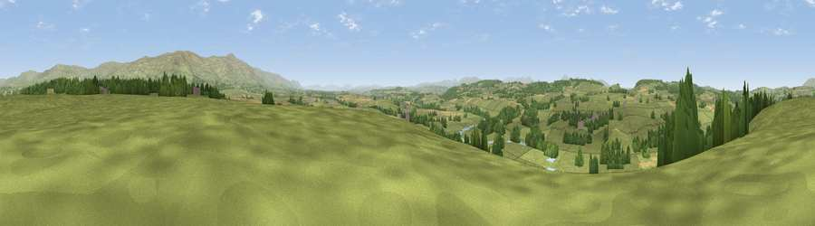

Viewpoint near Little Salkeld
#11427 in England · top 49% of its area beats it · near Little SalkeldThe view, rendered

A 360° render of this exact spot computed from the terrain model, tree cover and land cover — summer colours, afternoon light, calibrated against photographs of famous viewpoints. Real trees, hedges and buildings will differ in detail.
The panorama
Grey silhouette: terrain skyline in each direction (720 bearings, Earth curvature and refraction included). Dashed green: skyline with trees (+15 m) and buildings (+8 m) as obstacles. Blue strip: how far the ground is visible on each bearing.
Where the view opens
Wedge length = distance to the farthest visible ground on that bearing (vegetation-aware). Rings at 10, 25 and 50 km.
What fills the view
76% grassland · 12% woodland · 10% cropland · 2% water ·
Angular shares of the visible panorama (visual magnitude), not map area. Landscape diversity 0.35 (0–1 Shannon).
Key numbers
More beautiful places nearby
The staircase of upgrades: each row has a higher view potential than everything closer. Driving times are estimates from straight-line distance, calibrated against real road routing — check an actual route before setting out.
| Place | Direction | Drive | Score |
|---|---|---|---|
| Viewpoint near Plumpton | WNW · 5 km | ~12 min | 68.0 |
| Viewpoint near Plumpton | WSW · 6 km | ~12 min | 78.9 |
| Barrock Fell | NW · 14 km | ~26 min | 81.1 |
| Viewpoint near Watermillock | SSW · 19 km | ~32 min | 82.6 |
| Viewpoint near Watermillock | SSW · 19 km | ~33 min | 83.5 |
| Viewpoint near Legburthwaite | SW · 31 km | ~49 min | 83.8 |
| Skiddaw South Top | WSW · 32 km | ~49 min | 85.8 |
| Viewpoint near Applethwaite | WSW · 32 km | ~50 min | 86.7 |
54.72543, -2.67576 · source: screening · position refined by local search. Computed location — check access rights before visiting.